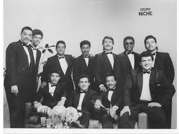
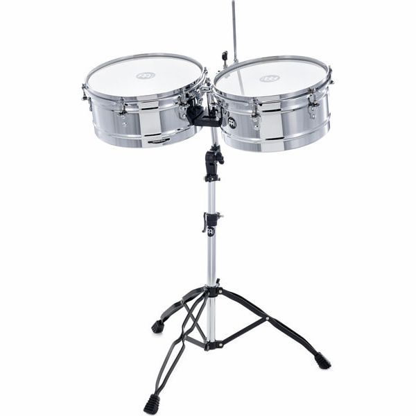
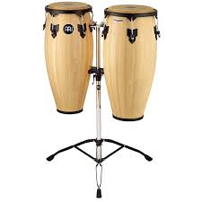
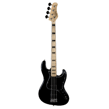
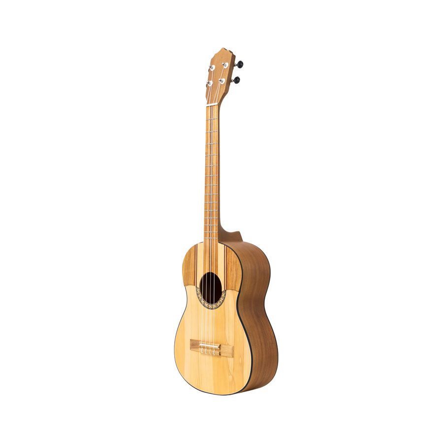

Salsa
La Energía de la Vida
La salsa es pura energía en movimiento. Nació de la fusión de culturas y refleja pasión, alegría y celebración. Su contagioso ritmo ha conquistado el mundo entero, convirtiéndose en una fiesta interminable para el cuerpo y el alma.
Instrumentos Claves para la Salsa

Piano
Esencial para armonías rápidas y clave para la improvisación.

Timbales
Proveen el característico sonido brillante y rápido de la salsa.

Congas
Marcan el ritmo con su tono profundo y percusión rápida.

Bajo Eléctrico
Establece la base armónica y rítmica con líneas prominentes.

Cuatro
Guitarra pequeña que proporciona armonía y ritmo.